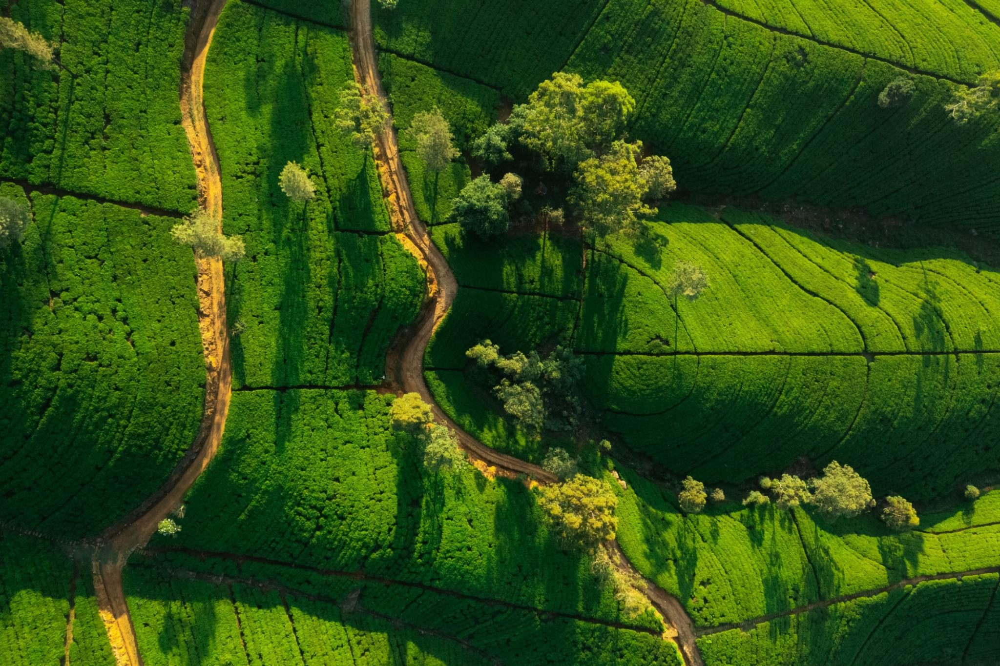
Lush valleys • Hidden waterfalls • Scenic viewpoints
Sri Lanka is a land of ever-changing scenery, where breathtaking views appear at every turn. From mist-covered mountains and rolling tea plantations to ancient rocks rising from green plains and dramatic coastlines meeting the Indian Ocean, the island offers landscapes found nowhere else in the world. Travel through the cool hills of Ella, where clouds drift over valleys and trains curve gently across stone bridges. Wander among endless green tea estates in Nuwara Eliya, discover hidden waterfalls deep in the jungle, and witness the powerful beauty of Sigiriya standing proudly above the plains. These landscapes are not just views — they are moments of calm, wonder, and connection with nature. ✨ Mountains • Waterfalls • Coastlines • Endless green horizons
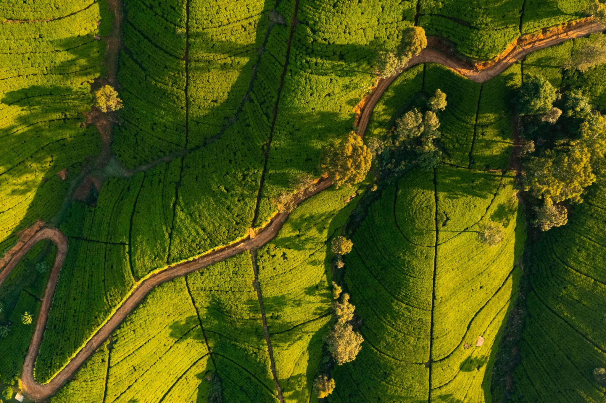
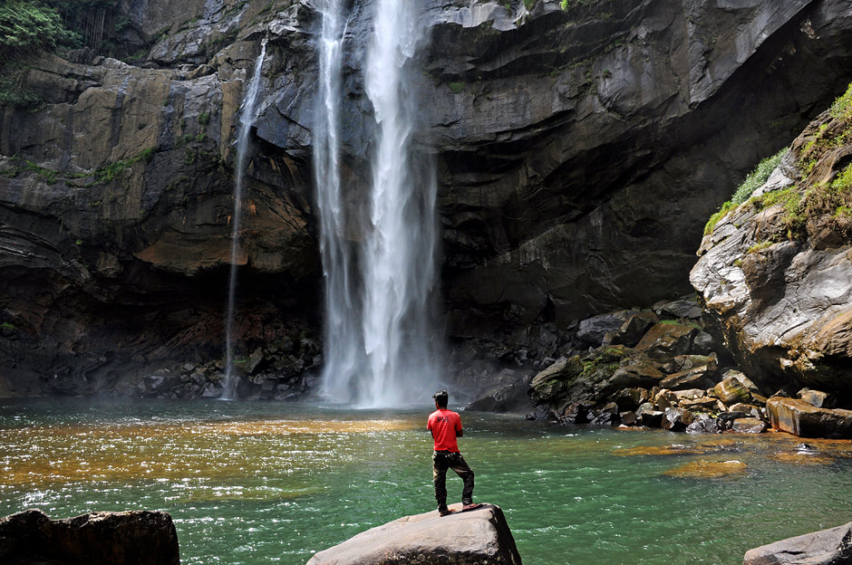
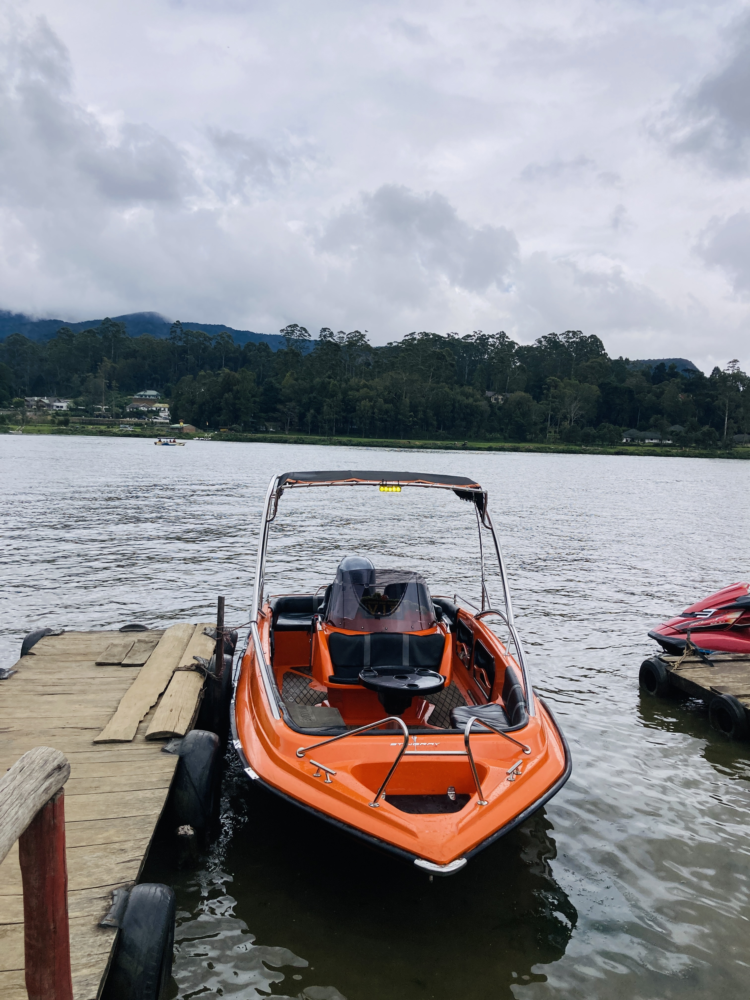
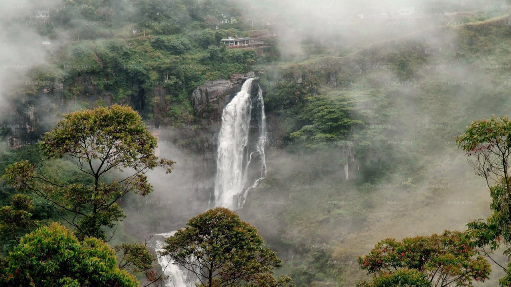
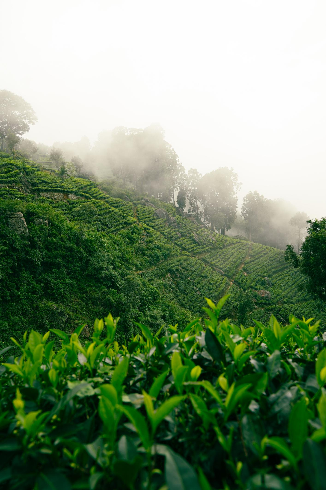
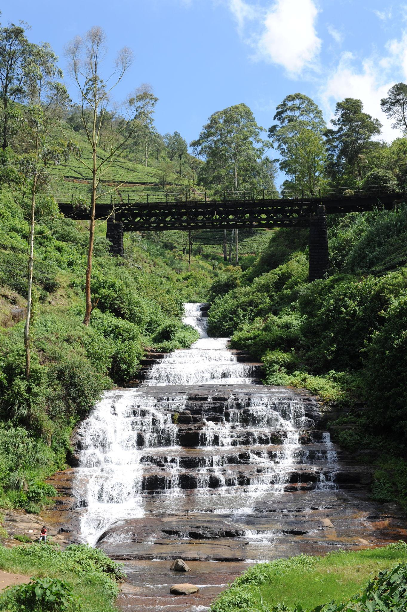
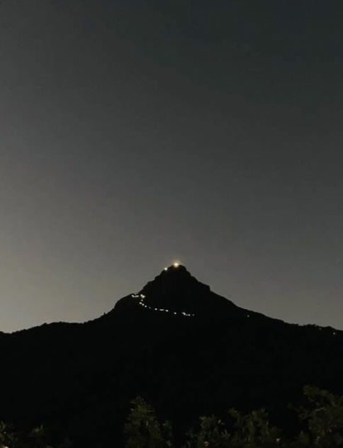
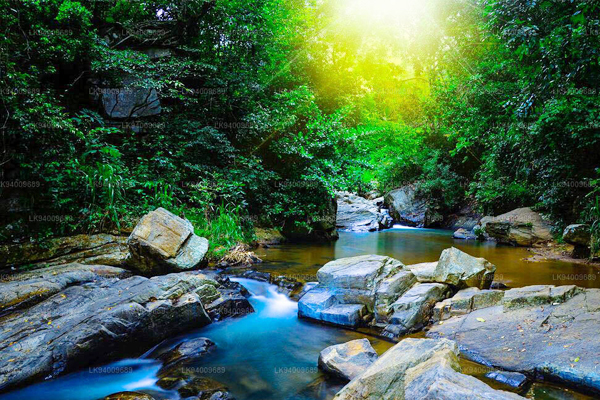
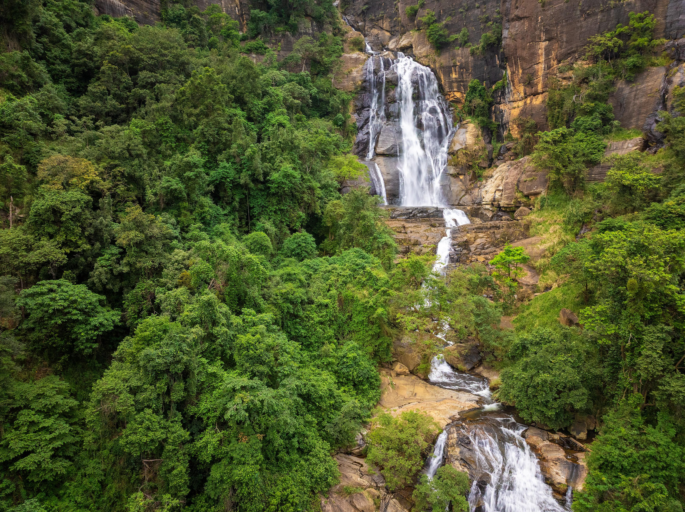
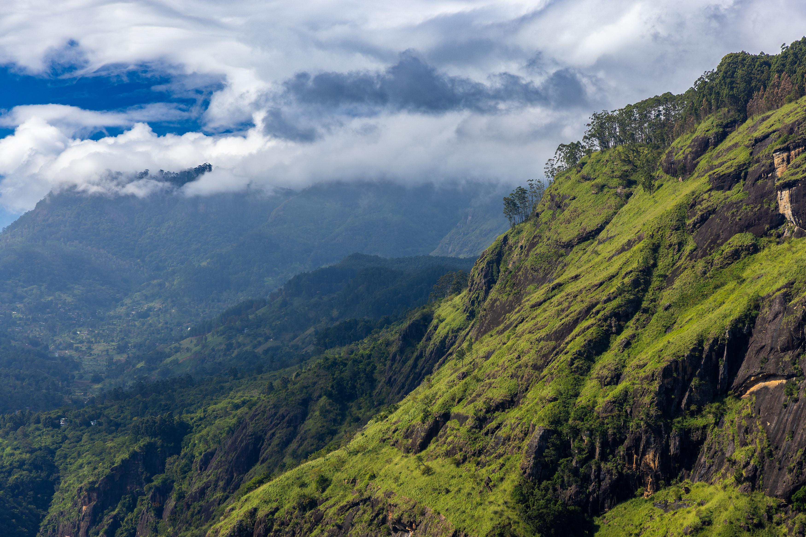
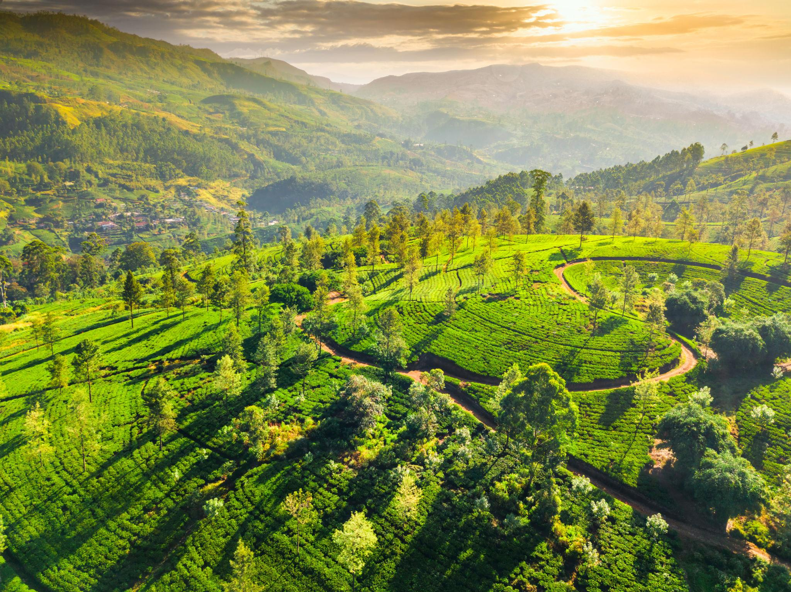
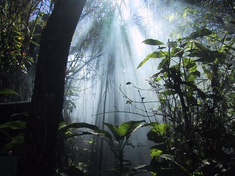
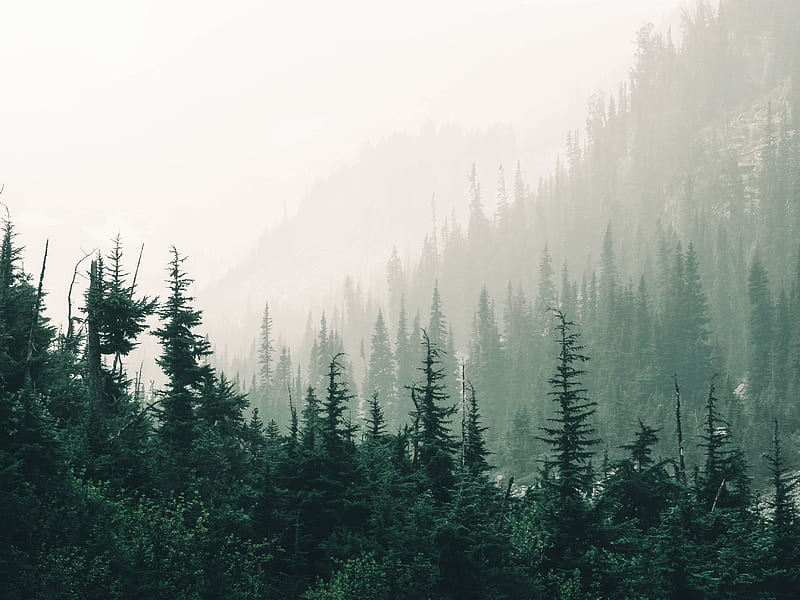